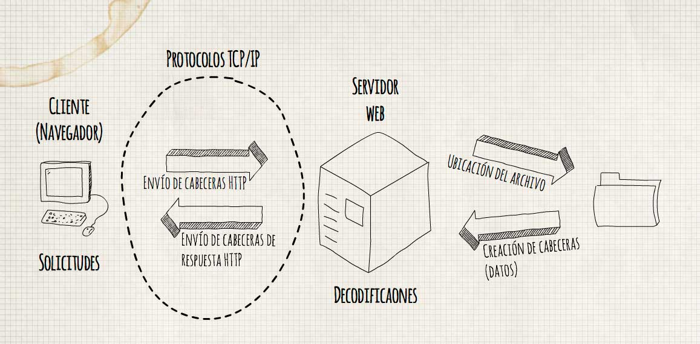
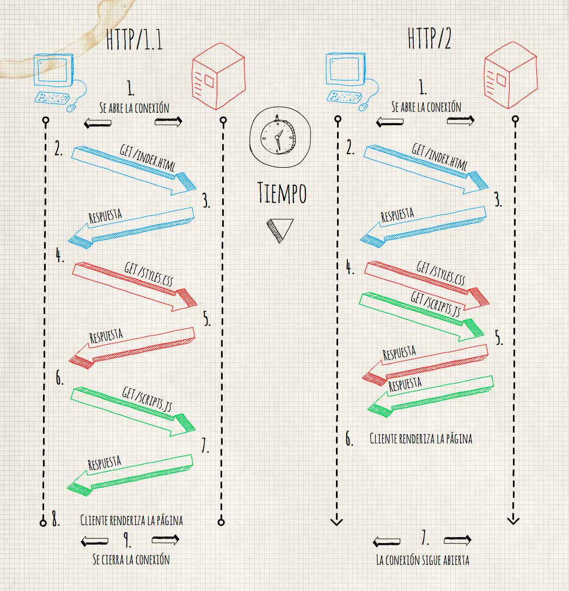

Como veíamos en ¿Qué pasa cuando te conectas a una web?, HTTP es un protocolo, para la transferencia de contenido HTML "HyperText Markup Language" en su mayoría, entre un cliente y un servidor, indicado mediante una cadena de caracteres o URL "Uniform Resource Locator".
¿Qué es una URL?¿Qué indica una URL?
Una URL es una cadena que identifica los recursos de una red y se descompone en el siguiente formato:
esquema://host[:puerto][/ruta][?consulta]
Algunos de los esquemas más usados son los siguientes:
http- Recursos HTML.https- HTTP encriptado, para realizar conexiones seguras, mediante SSL "Secure Sockets Layer".ftp- Transferencia de archivos.mailto- Direcciones de correo electrónico.file- Recursos disponibles en una red local.data- Agregar elementos en los documentos (Por ejemplo imágenes codificadas en base64).
¿Qué indican el resto de los campos? Host: Dominio o Ip del dispositivo a que queremos acceder. Puerto: Si no se indica, el puerto por defecto para http es 80. Ruta: Indica la carpeta y el recurso al que queremos acceder, los servidores suelen tener configurado recursos por defecto cuando no se indica en la URL, el más común es index.html. Otros ejemplos que suelen estar preconfigurados en los servidores son : index.php, index.shtml, index.jsp, default.asp. Consulta o cadena de búsqueda: Indica variables a través de la url (?nombre=miguel&apellido=rodriguez)
¿Cómo se realiza la comunicación HTTP?
La comunicación se puede simplificar en estos dos pasos:
- El navegador manda una petición HTTP y solicita un archivo
- El servidor responde con la información, que es descifrado por el navegador

La realidad es que es un proceso más complejo, ya que la comunicación no se realiza en una única etapa. La información se divide y se envía en pequeños paquetes que son unidos en el destino final, que es lo que establecen las normas o el protocolo TCP.
¿Qué tipo de mensajes usa HTTP?
En HTTP existen 20 comandos o métodos para acceder a una url, los más importantes son los que usan en las APIs REST, que es un tipo de arquitectura que define el uso para cada uno de estos comandos:
GET- Para consultar y leer registros.POST- Para crear registros.PUT- Para editar registros.DELETE- Para eliminar registros.PATCH- Para editar partes concretas de un registro.
Otros comandos que vale la pena destacar son los siguientes:
OPTIONS- Nos permite conocer las propiedades de la conexión .HEAD- Nos devuelve solo las cabeceras del recurso.TRACE- Se suele usar para depuración, para ver si nuestra petición pasa por servidores intermedios o proxys.CONNECT- Se usa para saber si un proxy puede funcionar como túnel SSL .
¿Qué cabeceras usa HTTP?
Las cabeceras son campos adicionales que acompañan a la petición, existen gran numero de cabeceras, tanto para las peticiones, como para las respuestas HTTP, en este post voy a explicar las principales, en próximos artículos veremos algunas otras como Access-Control-Allow-Origin.
Cabeceras de petición
| Nombre | Descripción |
|---|---|
| Accept | Tipo de contenido que acepta el navegador (por ejemplo,_texto/html_). Consulte [Tipos de MIME](https://es.wikipedia.org/wiki/Multipurpose_Internet_Mail_Extensions) |
| Accept-Charset | Conjunto de caracteres que espera el navegador |
| Accept-Encoding | Codificación de datos que acepta el navegador |
| Accept-Language | Idioma que espera el navegador (idioma por defecto, inglés) |
| Authorization | Credenciales de acceso del navegador en el servidor |
| Content-Encoding | Tipo de codificación para el cuerpo de la solicitud |
| Content-Language | Tipo de idioma en el cuerpo de la solicitud |
| Content-Length | Extensión del cuerpo de la solicitud |
| Content-Type | Tipo de contenido del cuerpo de la solicitud (por ejemplo,_texto/html_). Consulte [Tipos de MIME](https://es.wikipedia.org/wiki/Multipurpose_Internet_Mail_Extensions) |
| Date | Fecha en que comienza la transferencia de datos |
| Forwarded | Utilizado por equipos intermediarios entre el navegador y el servidor |
| From | Permite especificar la dirección de correo electrónico del cliente |
| From | Permite especificar que debe enviarse el documento si ha sido modificado desde una fecha en particular |
| Link | Vínculo entre dos direcciones URL |
| Orig-URL | Dirección URL donde se originó la solicitud |
| Referer | Dirección URL desde la cual se realizó la solicitud |
| User-Agent | Cadena con información sobre el cliente, por ejemplo, el nombre y la versión del navegador y el sistema operativo |
Cabeceras de respuesta
| Nombre del encabezado | Descripción |
|---|---|
| Content-Encoding | Tipo de codificación para el cuerpo de la respuesta |
| Content-Language | Tipo de idioma en el cuerpo de la respuesta |
| Content-Length | Extensión del cuerpo de la respuesta |
| Content-Type | Tipo de contenido del cuerpo de la respuesta (por ejemplo,_texto/html_). Consulte [Tipos de MIME](https://es.wikipedia.org/wiki/Multipurpose_Internet_Mail_Extensions) |
| Date | Fecha en que comienza la transferencia de datos |
| Expires | Fecha límite de uso de los datos |
| Forwarded | Utilizado por equipos intermediarios entre el navegador y el servidor |
| Location | Redireccionamiento a una nueva dirección URL asociada con el documento |
| Server | Características del servidor que envió la respuesta |
¿Que significa cada código de respuesta HTTP?
Los códigos de respuesta indican el resultado de una petición HTTP, están formamos por tres dígitos y los podemos clasificar por el primer dígito, que indica el estado.
| Código | Mensaje | Descripción |
|---|---|---|
| 10x | Mensaje de información | Estos códigos no se utilizan en la versión 1.0 del protocolo |
| 20x | Éxito | Estos códigos indican la correcta ejecución de la transacción |
| 200 | OK | La solicitud se llevó a cabo de manera correcta |
| 201 | CREATED | Sigue a un comando POST e indica el éxito, la parte restante del cuerpo indica la dirección URL donde se ubicará el documento creado recientemente. |
| 202 | ACCEPTED | La solicitud ha sido aceptada, pero el procedimiento que sigue no se ha llevado a cabo |
| 203 | PARTIAL INFORMATION | Cuando se recibe este código en respuesta a un comando de GET indica que la respuesta no está completa. |
| 204 | NO RESPONSE | El servidor ha recibido la solicitud, pero no hay información de respuesta |
| 205 | RESET CONTENT | El servidor le indica al navegador que borre el contenido en los campos de un formulario |
| 206 | PARTIAL CONTENT | Es una respuesta a una solicitud que consiste en el encabezado _range_. El servidor debe indicar el encabezado _content-Range_ |
| 30x | Redirección | Estos códigos indican que el recurso ya no se encuentra en la ubicación especificada |
| 301 | MOVED | Los datos solicitados han sido transferidos a una nueva dirección |
| 302 | FOUND | Los datos solicitados se encuentran en una nueva dirección URL, pero, no obstante, pueden haber sido trasladados |
| 303 | METHOD | Significa que el cliente debe intentarlo con una nueva dirección; es preferible que intente con otro método en vez de GET |
| 304 | NOT MODIFIED | Si el cliente llevó a cabo un comando GET condicional (con la solicitud relativa a si el documento ha sido modificado desde la última vez) y el documento no ha sido modificado, este código se envía como respuesta. |
| 40x | Error debido al cliente | Estos códigos indican que la solicitud es incorrecta |
| 400 | BAD REQUEST | La sintaxis de la solicitud se encuentra formulada de manera errónea o es imposible de responder |
| 401 | UNAUTHORIZED | Los parámetros del mensaje aportan las especificaciones de formularios de autorización que se admiten. El cliente debe reformular la solicitud con los datos de autorización correctos |
| 402 | PAYMENT REQUIRED | El cliente debe reformular la solicitud con los datos de pago correctos |
| 403 | FORBIDDEN | El acceso al recurso simplemente se deniega |
| 404 | NOT FOUND | Un clásico. El servidor no halló nada en la dirección especificada. Se ha abandonado sin dejar una dirección para redireccionar... :) |
| 50x | Error debido al servidor | Estos códigos indican que existe un error interno en el servidor |
| 500 | INTERNAL ERROR | El servidor encontró una condición inesperada que le impide seguir con la solicitud (una de esas cosas que les suceden a los servidores...) |
| 501 | NOT IMPLEMENTED | El servidor no admite el servicio solicitado (no puede saberlo todo...) |
| 502 | BAD GATEWAY | El servidor que actúa como una puerta de enlace o proxy ha recibido una respuesta no válida del servidor al que intenta acceder |
| 503 | SERVICE UNAVAILABLE | El servidor no puede responder en ese momento debido a que se encuentra congestionado (todas las líneas de comunicación se encuentran congestionadas, inténtelo de nuevo más adelante) |
| 504 | GATEWAY TIMEOUT | La respuesta del servidor ha llevado demasiado tiempo en relación al tiempo de espera que la puerta de enlace podía admitir (excedió el tiempo asignado...) |
Versiones HTTP ¿Que cambios hay en cada versión?
A lo largo de la historia este protocolo se ha ido actualizando, siendo la versión mas usada hoy en día la 1.1
- 0.9: Obsoleta, solo soporta GET, es muy limitado, no indica la versión ni permite cabeceras, por lo que el cliente no puede enviar mucha información al servidor
- 1.0: Implementa los métodos GET, POST y HEAD (Aún se usa en algunos servidores proxy)
- 1.1: Permite múltiples conexiones a la vez (Por la misma conexión), es la versión más utilizada.
- 1.2: Iba a ser la siguiente versión pero se descartó :'(
- 2: ¡Ha llegado la formula uno! :D, Esta versión incluye una gran mejora a la hora de la comunicación:
- Solo se crea una única conexión para transferir todos objetos HTML, CSS, JavaScript, imágenes, videos … La conexión es persistente, no se cierra.
- Usa la compresión y los mensajes se envían directamente en binario, y el dispositivo tarda menos en interpretarlo.
- El servidor puede enviar información antes de solicitarla, a través de una nueva tecnología denominada "server push".
Última versión HTTP/2
Veamos un pequeño gráfico comparativo de como funciona HTTP/1.1 y HTTP/2

Problemas de seguridad HTTP
Hay que tener mucho cuidado con las configuraciones de los servidores, ya que un despiste nos puede hacer caer en las manos de los hackers. Hoy os recomiendo una herramienta online que analiza la configuración de las cabeceras HTTP y nos indica, cuales son las configuraciones que tenemos que mejorar. https://securityheaders.io/ Las cabeceras con las que tenemos que revisar son las siguientes:
- Server: Puede poner la versión de nuestro servidor en compromiso, cuanta menos información tenga el atacante. ¡Mejor!
- X-Powered-By: Indica el framework utilizado por la web, igual que en el caso anterior, cuanta menos información, mejor. :D
- X-Frame-Options: Nos protege de ataques ClickJacking.
- X-XSS-Protection: Habilita el uso del filtro AntiXSS en el navegador.
- X-Content-Type-Options: Los navegadores, intentan averiguar el tipo de archivo que se está procesando, sin tener en cuenta su extensión. Uno de los problemas es que sistemas de correo envían archivos HTML como TXT y se terminan ejecutando en el navegador. Con este header evitamos que el navegador intente averiguar el MIME Type del documento.
- Strict-Transport-Policy o *HTTP Strict Transport Security (HSTS)*: El servidor indica a al navegador que ha de realizar todas las comunicaciónes a través del protocolo HTTPS.
- Content-Security-Policy: Indica una lista blanca de los scripts, plugins o servidores que se pueden utilizar.
Os facilito un pequeño código para poner en el .htaccess del servidor para mejorar algunos aspectos mencionados:
Header always append X-Frame-Options SAMEORIGIN
Header set X-XSS-Protection "1; mode=block"
Header set X-Content-Type-Options "nosniff"
Header set Strict-Transport-Security "max-age=31536000" env=HTTPS
Y con esto y un bizcocho, esperando el artículo de la semana que viene :D